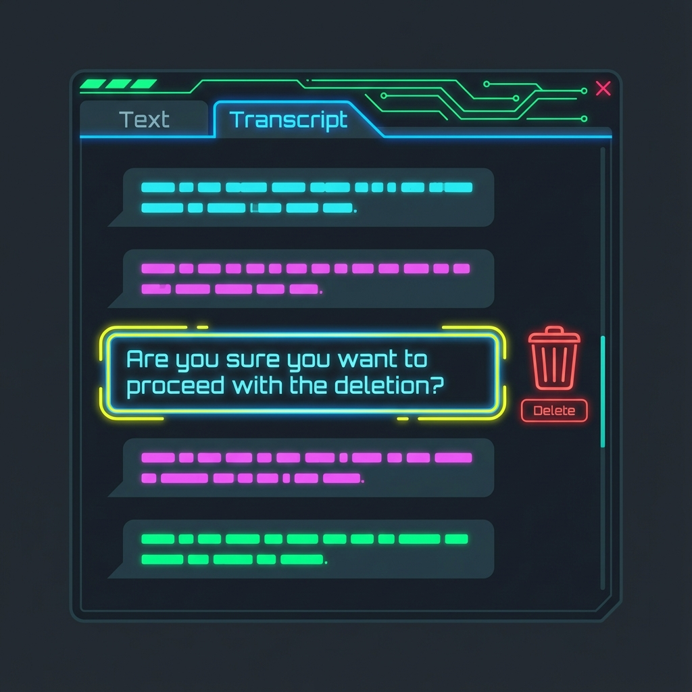
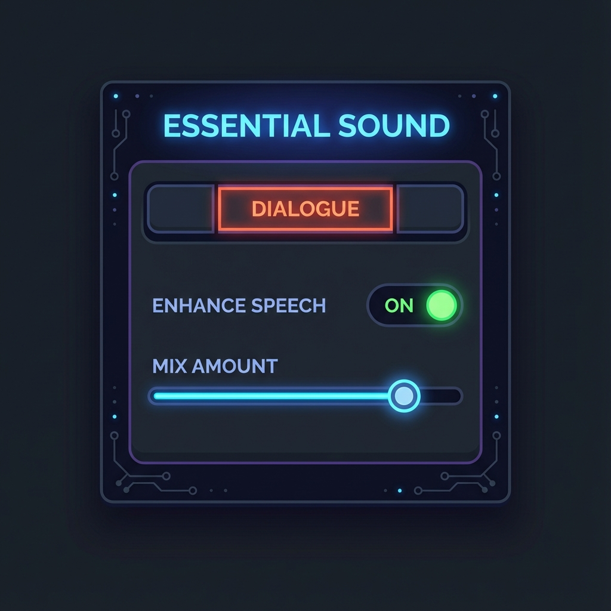
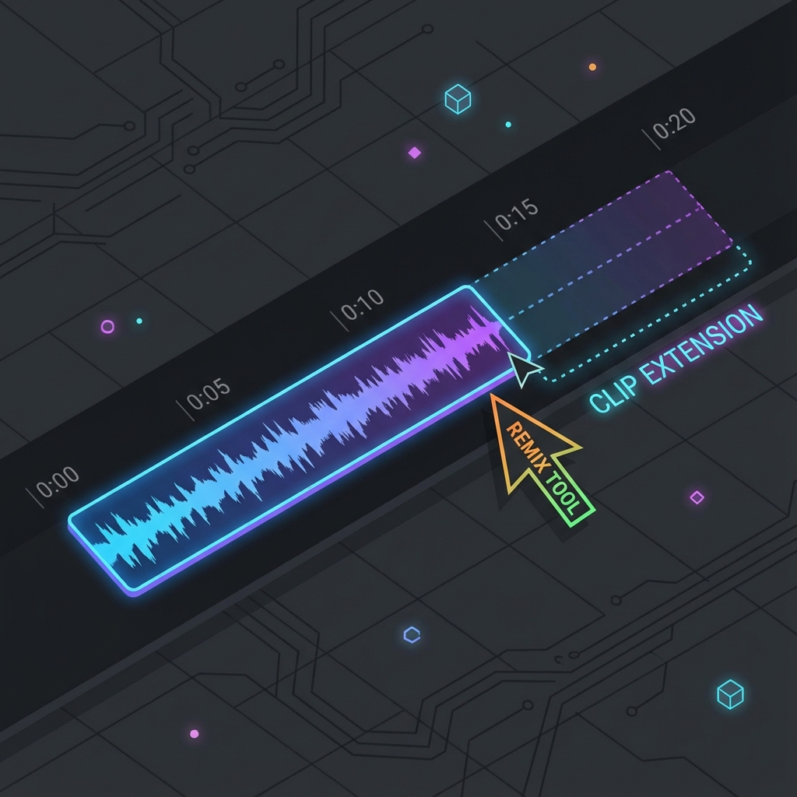

⚡️ 時間泥棒を撃退する3つのAI機能
Premiere Proには数多くのAI機能が搭載されていますが、特に効果絶大な3つを厳選しました。
文字起こし編集（Text-Based Editing）
今まで：「波形を聞いて、無言部分を探してカット」
これから：「テキストエディタのように文字を消すだけでカット」

- 「文字起こし」タブを開き、シーケンスの音声を自動文字起こしさせます。
- 表示されたテキストの中から、削除したい文章をマウスで選択します。
- Deleteキーを押すだけ！ タイムライン上の該当する映像も一緒に消えます。「えー」や「あのー」も一括削除可能です。
スピーチを強調（Enhance Speech）
「外で撮影したら風の音がうるさい…」「部屋の反響音がひどい…」そんな音声も救えます。

- 音声クリップを選択し、「エッセンシャルサウンド」パネルを開きます。
- 「会話」タグを付け、「スピーチを強調」のスイッチをONにします。
- AIがノイズを除去し、まるでスタジオで録音したようなクリアな声になります。効き目はスライダーで調整可能です。
リミックスツール（Remix）
「動画は1分なのに、BGMが3分ある…」途中で切る？フェードアウト？いいえ、AIに編曲させましょう。

- ツールバーから「リップルツール」を長押しし、「リミックスツール」を選びます。
- BGMクリップの端をドラッグして、動画の長さに合わせます。
- AIが曲の構成を解析し、違和感のないように切り貼りして、ピッタリの長さにしてくれます。つなぎ目が全く分かりません！